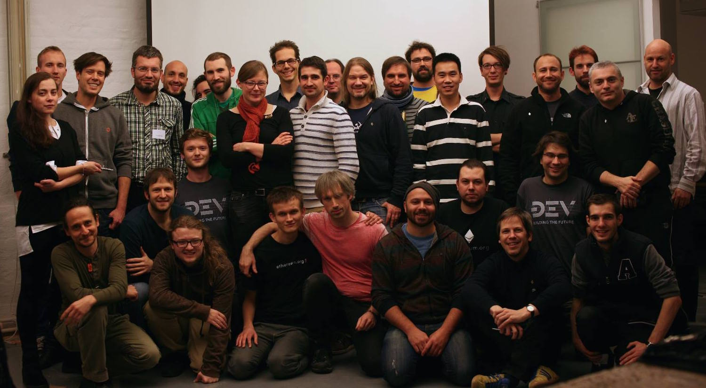
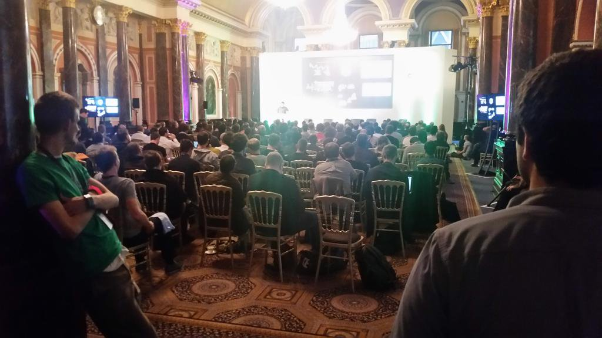
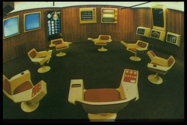
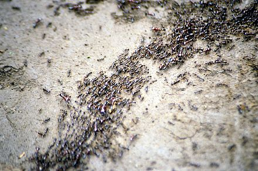

Self-Organizing In A Decentralized Galaxy
Who Am I?
Jamie
http://twitter.com/jemenger
This presentation was built with reveal.js https://github.com/hakimel/reveal.js
Our eosystem is difficult to navigate
Particularly for newcomers!→ |
We need navigators. We need a map.
Advice to new ones arriving
- Read voraciously.
- Write, build, and help out. Join a crew or two.
- Cluster with others who believe in you.
What is the structure?

Myself. Team. Organization. Galaxy. Universe.
Bright and violent history of the galaxy
Structure emerged from key events and factors:
- Ideas and proposals
- Self-organizing teams
- Early personalities fanning out
- Enormous amounts of capital in motion
- Shared values, shared culture
Galactic stew: Devcon0

Almost everyone at Devcon0, audience and speakers.
Many now lead the core teams and core organizations.
Galactic stew: Devcon1

A larger group by 2015.
Many now lead the key dapps of the ecosystem.
We pay attention to large "organizations"
Ethereum Foundation, Parity Tech, ConsenSys, Status
...but there are hundreds of indie teams!
Teams loosely cluster around resources
"Control" is more like pushing string than pulling strings
(except when the resources are suddenly scarce)
Teams do not follow orders
Decentralization ethos and mistrust of authority"NOIIC" - No One Is In Charge (of much)
How to escape the
Tyranny of Structurelessness?
- Strong leadership
- Protocols, practices, policies
- Effective communication and coordination
Cybernetics
kybernētikḗ, meaning "governance"
kybernḗtēs, meaning "helm-person" of the "ship"
Cybernetics
|  Control systems | → |
 Self-organized systems |
Cybernetics Philosopher: Norbert Wiener
WWII anti-aircraft systems, automatic aiming and firingFormalization of the notion of feedback
Use of information leads to a localized decrease in entropy
Cybernetics Philosopher: Friedrich Hayek
Catallaxy: "self-organizing system of voluntary co-operation"
The price mechanism as a means to transmit information in the cybernetic system.
Cybernetics Philosopher: Heather Marsh
"Stigmergic society", WikiLeaks, Occupy Wall Street"With stigmergy, an initial idea is freely given, and the project is driven by the idea, not by a personality or group of personalities."
"No individual needs permission (competitive) or consensus (cooperative) to propose an idea or initiate a project."
Cybernetics Philosopher: Rick Falkvinge
Swarm organizations and The Pirate Party"Swarmwise", Rick Falkvinge, 2013
Adopted by Status?
Ethereum Teams Have...
1. Shared Values
security/integrity | decentralization/anti-authority | liveness/productive2. Roles
organizers | builders | maintainers | philosophers
Ethereum Teams Have...
3. Social Code
mission | principles | practices | policies4. Behavior
taking responsibility | managing resources | doing the work | self-steering
→ → coordinating with other teams ← ←
NOIIC!

Jamie
http://twitter.com/jemenger
This presentation was built with reveal.js https://github.com/hakimel/reveal.js